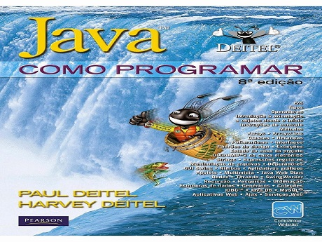

C - Como Programar

C - Como Programar

Desde a década de 1990, mais de um milhão de alunos e profissionais aprenderam programação e desenvolvimento de software com os livros da série 'Como programar', de Deitel®. C: como programar, 6ª edição, apresenta três paradigmas atuais de programação: procedural em C, orientada a objeto e genérica em C++. O livro é apropriado para cursos de programação em C e C++ de níveis: introdutório e intermediário.
Categoria: Programação, tecnologia.
Saiba Mais